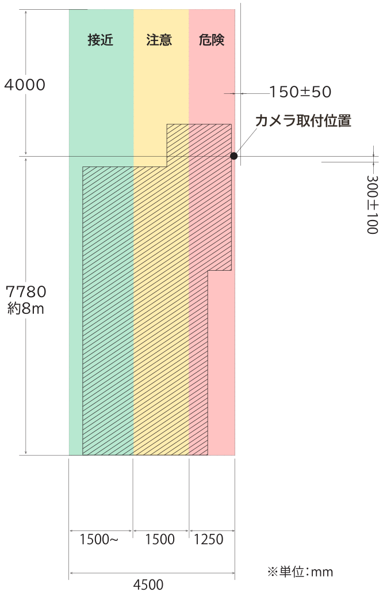
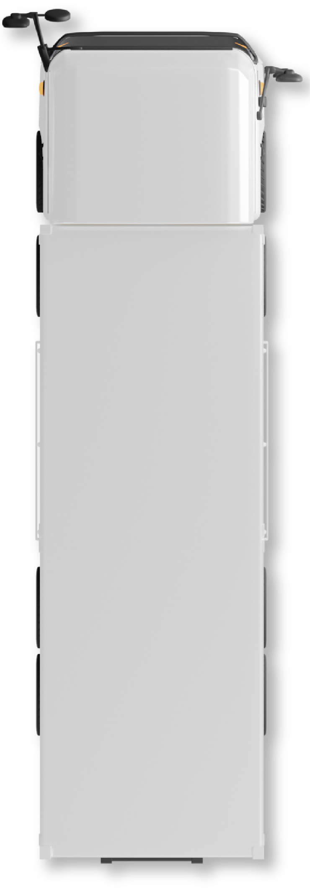

検知範囲と警告灯

斜線：協定規則第151号規制範囲


検知範囲
高さ２mに取り付けた場合の検知範囲です。
２m以上に取り付けた場合はこの範囲より広くなります。
より広い範囲を検知対象としたい場合はできるだけ高い位置に取り付けしてください。
対人検知範囲は、およそ±20%程度の範囲で検知対象との相対速度によって検知しないおそれがあります。必ず目視で安全を確認し、十分に徐行してすぐに停車できるようにしてください。
画面内警告表示と警告灯、
および警告音について
危険度に応じて、画面内の警告表示と警告灯の点灯、および警告音 が鳴ります。
| 接近 | 注意 | 危険 | |
|---|---|---|---|
| 警告表示 (画面内) |
緑縞 | 黄縞 | 赤縞 |
| 警告灯 | 緑 | 黄 | 赤 |
| 警告音 | なし | 注意 | 警報 |
車両の検知は画面上に緑棒でお知らせします。
機器に異常が発生した場合は、画面上のエラー表示とエラー音でお知らせします。